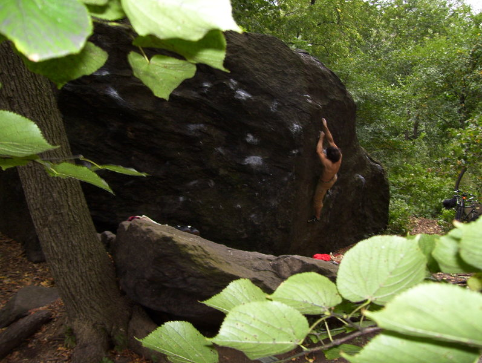
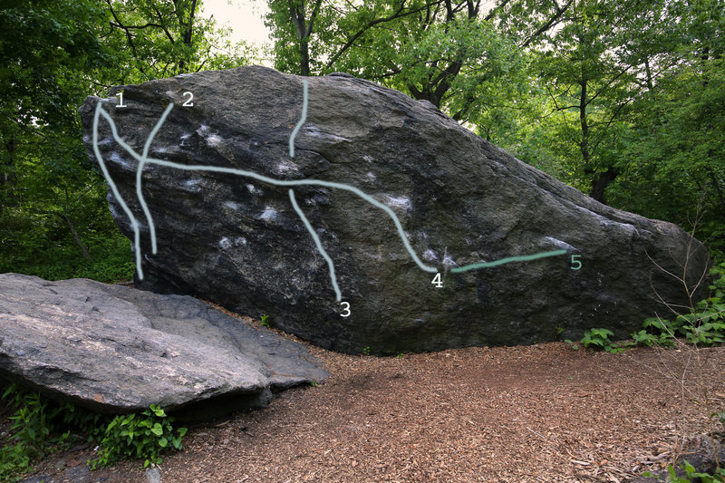
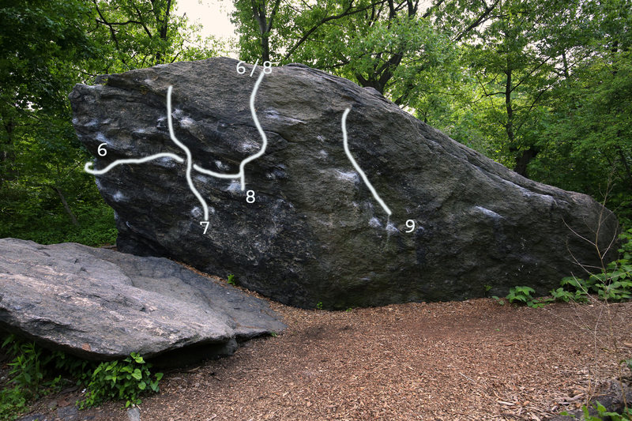

Cat Rock
Location: southeast corner, northwest of Wollman Rink
Total climbs: 13
- v2-3: 2
- v4-5: 4
- v6-7: 2
- v10-11: 2
Type: face
Top out: 15 ft
Gear: crashpads, chalk, climbing shoes, brush
Rat Rock
Location: south of Heckscher Fields
Total climbs: 18
- v4-5: 2
- v6-7: 9
- v8-9: 3
- v10-11: 3
- v12-13: 1
Type: traversal
Top out: 10-20 ft
Gear: crashpads, chalk, climbing shoes, brush
Worthless Boulder
Location: middle of the northmost part of the park
Total climbs: 31
- v2-3: 6
- v4-5: 4
- v6-7: 5
- v8-9: 2
- v10-11: 6
- 5.11: 1
Type: traversal, slab
Top out: 5-10 ft
Gear: crashpads, chalk, climbing shoes, brush
bail